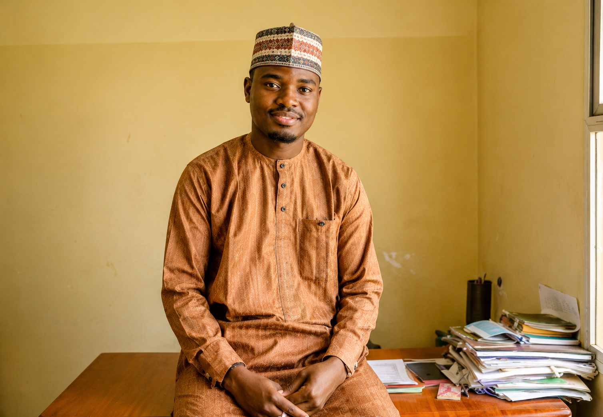
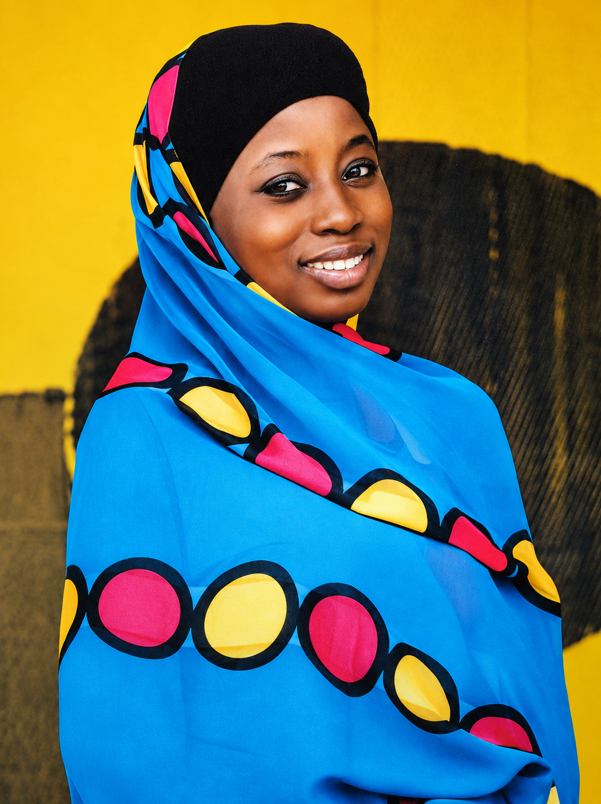
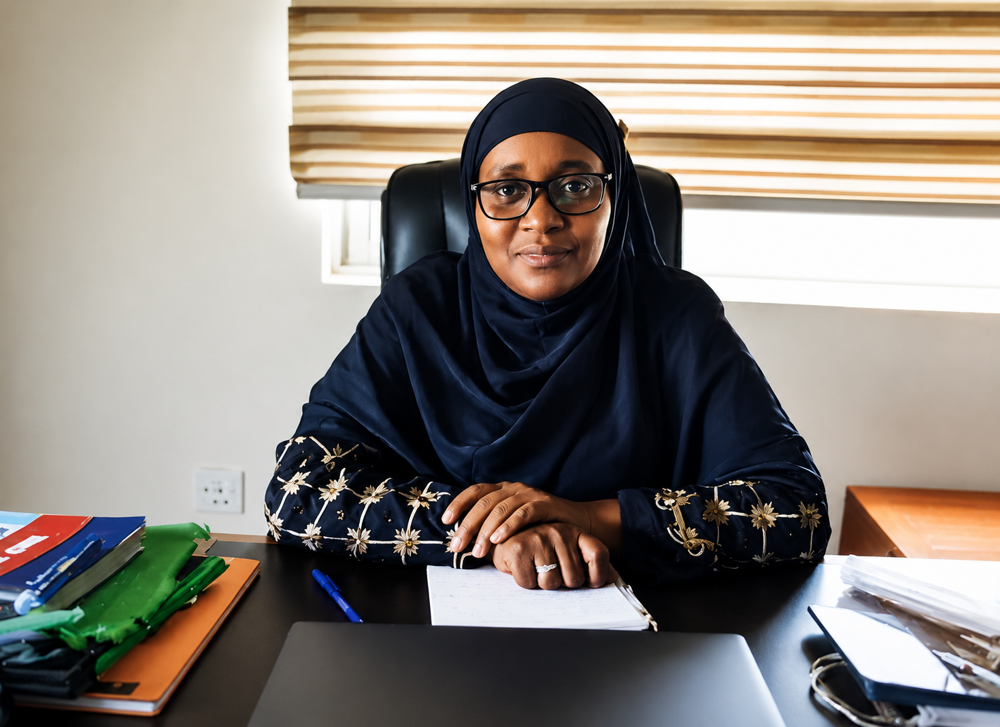

Building Trust, Protecting Communities
This exhibition presents photographs and stories from a field study in Kano state, exploring the realities of communities.
The images highlight the challenges of vaccine hesitancy, misinformation, and access to healthcare, while showcasing the dedication of health workers, educators, volunteers, and community leaders working to improve vaccine acceptance. They demonstrate how trust, community engagement, and public education play a vital role in protecting communities from vaccine-preventable diseases.
Together, these photographs offer a glimpse into the resilience, commitment, and collaboration that continue to strengthen immunization programmes and advance public health outcomes across Kano State.
Photo Gallery

Faruk Alhassan

Salma Ibrahim

Zainab Musa